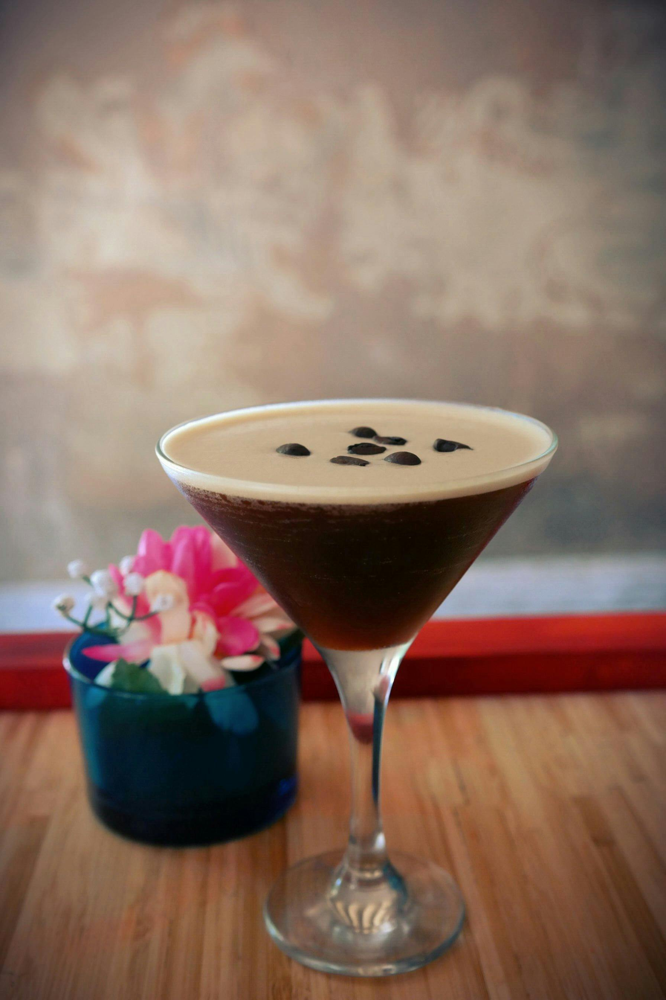

Espresso Martini – Bold, smooth, and unforgettable

Welcome to Dylan's Bartending School — your go-to destination for all things craft cocktails. We’re a team of passionate bartenders and mixologists dedicated to helping you learn to bartend at home and get certified. From professional recipes and techniques to detailed instructions and inspiration, we make it easy to create memorable drinks at home or behind the bar. Whether you’re a beginner or a seasoned pro, we’re here to help you raise the bar.
Whether you're just starting out or looking to take your skills to the next level, our step-by-step guides, video tutorials, and certification resources will help you build confidence and creativity behind the bar. Join our growing community and turn every gathering into a memorable experience.
Dylan's Bartending School™ was founded in 2011 by Dylan Alsobrooks in Houston, Texas. Recognized as an elite bartender, Dylan was recently voted #8 in the Top 10 Bartenders by the Houston Bartenders Association. His passion and expertise continue to inspire our mission of making professional bartending skills accessible to everyone.